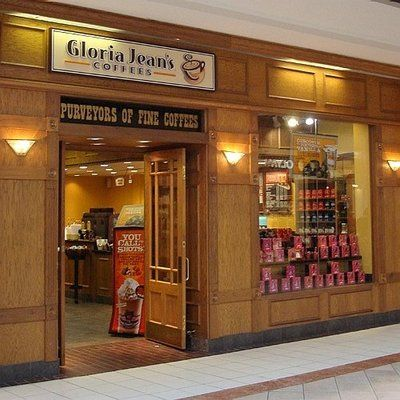

- Gloria Jean’s Coffees, 1979 yılında Long Grove, Illinois olarak bilinen Chicago’nun kuzeyindeki küçük bir kasabada Ed ve Gloria Jean Kvetco’nun küçük bir hediyelik eşya dükkânı satın alıp hediyelik ürünlerin yanında gurme kahve satmaya başlamalarıyla kurulmuş oldu.
1986 yılında kendi konseptleriyle Gloria Jean’s Coffees A.B.D. olarak şirketleştiler.1995 yılında Nabi Saleh ve Peter Irvine adlı iki ortak Gloria Jean’s Coffees’in isim haklarını Avusturalya kıtası için satın aldılar ve Avusturalya’daki ilk Gloria Jean’s Coffees mağazası 1996 yılında açılmış oldu.
- 2005 yılında Nabi ve Peter, Gloria Jean’s Coffees’in üretim ve uluslararası isim haklarının tamamını Gloria Jean’s Coffees A.B.D.’den satın aldılar. Böylece Gloria Jean’s Coffees’in tüm uluslararası hakları % 100 olarak Avusturalyalı yatırımcılara geçmiş oldu.
Sürekli olarak gelişip büyüyen Gloria Jean’s Coffees bugün Avusturalya’da 420’nin üzerinde ve dünyanın 50 farklı ülkesinde 750’yi aşkın mağazaya sahiptir.
Bu sayı her geçen gün açılan yeni mağazalarla artmaktadır.

LONG GROBE , ILLINOIS